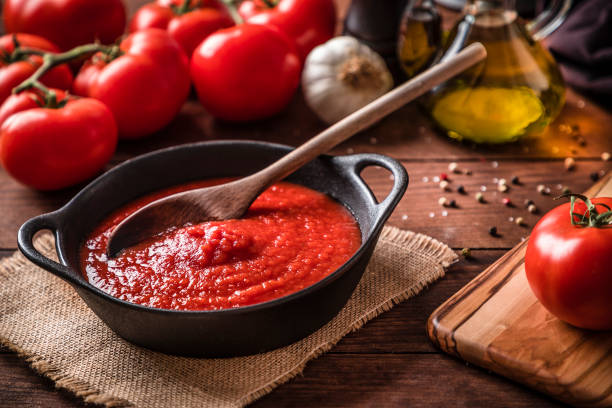

Los ñoquis de papa con harina común y los ñoquis de calabaza son un
clásico de todos los 29 y más en esta cuarentena, en que hay un fenómeno
de la cocina casera. Con fileto, bolognesa, salsa rosa, pesto, manteca o
sólo hojitas de laurel, son la pasta favorita entre los argentinos. Pero
si se quiere redoblar la apuesta, es momento de descubrir la receta de
ñoquis rellenos.
Ingredientes para los ñoquis
1 kg. de papas
300 grs. de harina
1 huevo
1 cucharadita de polvo de hornear
150 grs. de queso parmesano rallado
500 grs. de queso muzarela
Sal
Pimienta
Ingredientes para la salsa

1 cebolla
2 dientes de ajo
3 tomates
8/10 hojas de albahaca fresca
1 cajita/lata/botella de salsa de tomate
2 cucharaditas de azúcar
Aceite de oliva
Sal
Pimienta
Pasos a Seguir!!!
Hacer un puré con las papas. Poner únicamente sal al agua. Dejarlo
enfriar.
En un bowl poner el puré, el huevo batido ligeramente, el polvo de
hornear, dos puñados de queso rallado, sal y pimienta.
Mezclar todos los ingredientes.
Formar una masa. Si ven que esta MUY pegajosa y es imposible de manejar,
pónganle más harina. Todo va a depender de la humedad, la calidad de la
harina, etc.
Cortar el queso que van a usar para rellenar.
Ahora la parte que para mi gusto es terapia: rellenarlos. Primero
pónganse harina en las manos, aplaudiendo para que sólo quede lo justo
para que no se les peguen.
Pellizcan un pedacito de masa y forman una bolita. Ahora a aplastarla.
Poner un cubito de queso y formar como si fuera una empanada,
prestándole mucha atención de cerrarlo bien.
Cuando vean que ya no asoma el queso por ningún lado, vuelven a formar
la bolita. Va a quedar del tamaño de una nuez más o menos.
Pausa: sean generosos con el queso y traten de poner poca masa. Lo rico
es que estén BIEN rellenos. El encanto de estos ñoquis es cortarlos por
la mitad y que caiga el queso por todos lados.
Ir acomodándolos en una bandeja espolvoreada con harina.
Poner una olla con agua y sal a calentar para los ñoquis. Que sea grande
y con abundante agua, así no se pegan. También prender el horno fuerte
para gratinarlos después.
Ahora, la salsa. Primero pelamos los tomates y los cortamos en cubitos
chiquitos. Picamos la cebolla y el ajo.
Poner un poco de aceite en una olla y calentar. Agregar la cebolla y el
ajo. Rehogar. OJO! Que no se queme el ajo que se pone amargo.
Agregar el tomate. Dejar cocinar 5 minutos revolviendo de vez en cuando.
Agregar la salsa de tomate y condimentar con sal y azúcar. Tapar, bajar
el fuego y dejar que se impregnen todos los sabores.
Agregarle unas hojitas de albahaca fresca picada o cortada (yo lo hago
con la tijera de cocina arriba de la olla shh ;) pasados unos minutitos,
agregar la crema. Calentar y listo la salsa.
En una fuente para horno poner salsa en el fondo y dejarla a mano para
sacar los ñoquis.
Cuando el agua hierva poner los ñoquis. Recién al minuto de ponerlos
revolver con un cucharón de madera así no se pegan en el fondo. Mientras
se cocinan, revolvemos cada tanto. Cuando estén flotando ya los podemos
sacar con una espumadera, escurriendo bien el agua. COLADOR NO.
Los ubicamos arriba de la fuente con salsa. Poner más salsa por encima
hasta cubrirlos.
Agregar queso rallado y llevar al horno fuerte para gratinar.